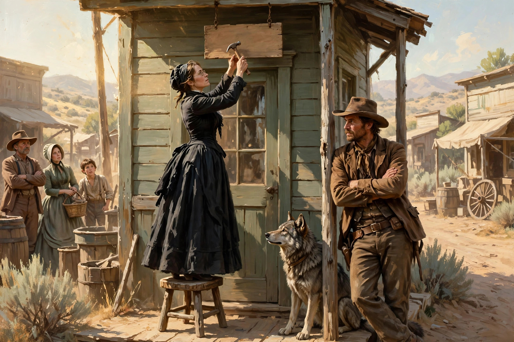

经典美剧《女医生》观剧笔记 1（S1E1）
今天开始“考古”一部美剧《女医生》（Jane Seymour主演），这部剧古老到我都不记得是哪年在央视看到的配音译制版，也不记得看完了没有（资料显示首播是1993年1月）。
这应该是我看过的最老且印象最深刻的美剧之一了（之前有加里森敢死队和大西洋底来的人，都应该比这部早，但都不记得情节了）。之所以印象深刻是从没见过这么美丽且有个性的女主角（别笑，当时就那么点见识），而且还有风光迷人的美国西部和白人对印第安人的残酷迫害等历史背景。
虽然这么多年过去了，我只记得第一季里的一些故事，但每每回想起这部剧，我都下定决心要仔细重温这部经典剧集。可惜，因为我自己的懒惰，一直拖到现在。昨天我又从网上找来了资源，终于开始看了第一集。看完后，心情那个感动和舒畅啊，觉得不记录下来太可惜了。于是我又下了个任性的决定：以观剧笔记的形式，每看完一集或几集，就记录一些打动我的故事和个人感想。不为别的，只为了这部剧情曾经和再次带给我的美好感觉。这个系列不定期更新，希望有同样看过这部剧的朋友会喜欢我的碎碎念。
今天先来介绍第一季的第一集，由于本集介绍背景和主要人物，以及奎恩医生开始行医时经历的很多或荒唐或感人的故事，所以篇幅会有点长。希望您能耐心看完。
S1E1（第一季第一集，以后以SxEx的形式简称）
初到边疆
故事发生在十九世纪末，工业革命正在西方世界如火如荼地进行，彼时的美国还是个朝气蓬勃的新兴国家。广阔的美国西部还没多少白人涉足，那里的原住民是世代居住于此的印第安人。新兴的美国资产阶级正在积极向西部扩张。有一部分愿意冒险或寻求新机会的新移民已经率先到达他们所称的“新边疆"(New Frontier）。
故事从来自“发达”大城市波士顿的女医生麦克尔·奎恩（Michael Quinn)的自述开始。奎恩医生出生在一个中产家庭，父亲是名医生。母亲背景不明，但似乎也是大家闺秀。按当时的传统，这种出身的奎恩医生理应像她的同龄人一样时常出入舞会和城市的上流社交场所，趁年轻貌美早日择得门当户对的如意郎君，过上幸福的上流社会贵妇生活。但奎恩医生从小就非常有独立意识，凭借自己的聪明和努力考上了一个女子学院的医学生，并成功拿到了行医执照。虽然其父也是医生，但女子学医并从事医生职业在当时的美国近似于离经叛道的荒唐行为。在父亲病逝后，奎恩与母亲在未来职业规划方面产生了激烈的分歧。奎恩决定学以致用去行医，但母亲坚决反对，希望她早点迷途知返，择良夫而嫁才是正道。后来，似乎是为了证明自己的决心，奎恩做了一个重大的决定，成功应征某西部边陲小镇的医生招募广告，去往该小镇定居行医。母亲反对无效，也只有无奈地看着女儿打包离开了。
初到小镇的奎恩医生身着城市淑女的华服，从马车下来就踩了一脚的泥。镇上居民听说来了个女医生，起初都很惊奇，确认后个个一脸鄙夷，不相信女人也能当医生。奎恩接下来向人们打听发布招募广告的小镇牧师在哪，结果一不小心面朝下摔了一交，漂亮的衣服沾满了黑泥，别提多狼狈了。好不容易见到牧师，向后者说明来意。牧师听完一脸震惊，都顾不上安慰满脸满身泥的奎恩，说你就是那位麦克尔·奎恩医生？得到肯定答复后，他说，看名字我还以为应征的是位男医生呢。奎恩医生解释，父亲本来希望生个儿子，结果是个女儿，心有不甘，于是给女儿命以男子之名。牧师从震惊中恢复过来后，勉强接受了奎恩医生的报到，接下来给她引荐镇上的一些人。
保守的小镇居民大都不接受新来的女医生，对奎恩医生轻则不理不睬，重则恶语相向。只有一位和蔼的中年女士例外。她叫Charlotte，是一名寡妇，独自带着两男一女三名孩子（从大到小分别叫Matthew，Colleen和Brian）。善良的Charlotte不但从一开始就接受并喜欢奎恩医生，还主动帮她寻找住处。在她们张贴寻租广告时，进来一位原住民打扮的白人，身上别着一柄锋利的手斧，后面跟着一只威风的狼犬。经介绍，他叫Sully，原是镇上居民。Sully本来有个深爱的妻子。但不幸的是，妻子后来难产，因得不到及时救治，和孩子一同去世。这件事给Sully以毁灭性的打击，让其一蹶不振。后来他离开小镇，加入附近一个叫Cheyenne的印第安部落，与印第安人同吃同住，过上半隐居生活。在与印第安人朝夕相处期间，他也学会了一身的狩猎和战斗本领。他擅长飞斧，斧无虚发。那只狼犬是他形影不离的战友，也是他得力的帮手。这一人一狗经常来往于小镇和印第安部落之间。小镇居民都认识他，但由于当时白人政府对印第安人的打压政策，也小心地和他保持着距离。
至此本剧的主要角色均已陆续登场，接下来继续讲故事。Charlotte邀请暂时还没住处的奎恩医生到她家休息，这时Sully出现在奎恩医生面前。奎恩对这位半“野人”装束的陌生男子还有所警惕，见他手上拿着她刚张贴的广告，问他怎么拿了广告。Sully回答说，我不是拿，我是回应（answer）。奎恩更加惊奇了。原来Sully在小镇边缘有一处空闲的房产，是其岳母（已过世，这里为什么不提岳父，后面会交代）留给他们两夫妻的新房。妻子去世后，Sully离开伤心地，这间房屋就闲置了。Sully对新来的女医生心生敬佩，于是决定把这间房出租给奎恩医生。
住处问题解决了，接下来就是搬家。好心的Charlotte带来三个孩子帮忙打扫。当她看到明显不事劳作的奎恩医生扫地扫得满屋是灰时笑了，给奎恩医生示范，扫地前先洒点水(sprinkle），大家就不会灰头土脸了。（看到此处我笑了，编剧还是很懂生活的，把角色写活了。）
安顿好住处，奎恩医生下一步当然就是寻思开业的事。她从波士顿带来一个小小的名牌（shingle），上面写着M Quinn M.D.（M·奎恩医生），挂在门口。Sully看到后有点不屑地开玩笑，not much of a shingle（这牌子不怎么大嘛），随后掉头离开。
招牌有了，接下来的工作自然就是招揽客户（病人）了。但从小镇居民之前的态度可以猜到，这个过程非常地不顺利。几乎所有人，哪怕是正在患病的人，见了奎恩医生就像见了瘟神一样躲开，一脸地不信任。不但如此，有些人眼光中甚至还带有仇恨，简直把奎恩医生当作女巫一样看待。连处于小镇歧视链底端的黑人铁匠都是这样的态度，甚至不愿卖马给她。但奎恩医生说了句触动他的话，大意是我原以为你是镇上最明白被人歧视是什么滋味的人。黑人铁匠这才受到触动，态度变得缓和，后来卖了马给奎恩医生。

在连连碰壁，没有一个患者愿意上门的情况下，奎恩医生接下来用了一个“狠招”，扭转了局面。她去找镇上一位牙医看牙，说自己有颗牙疼，请牙医给看看。这位牙医其实是个草包，但看到上门的生意哪有不做的。随便看了看就说这牙得拔掉。奎恩医生狠了狠心，说拔吧。于是牙医拿来一把钳子，在不打麻药的情况下，直接开拔。看得一旁围观的人都直喊疼。但意志力惊人的奎恩医生居然哼都没哼一下。后来奎恩医生和Charlotte说起此事，Charlotte猜到奎恩医生拔了颗好牙，震惊得不得了。不过马上意识到，奎恩医生这么做是在向镇上看不起他的那些男性居民们展示自己的确是个狠人，而不是他们心目中一无是处的弱女子。通过这件事，牙医首先对奎恩医生产生了敬意。其他人对奎恩医生的态度也大为改观。慢慢开始有病人来找她看病。
正当奎恩医生准备开始新生活时，镇上发生了一件不幸的事，这件事也直接改变了奎恩医生的人生。一天，Charlotte的孩子Brian十万火急地来找麦克医生（这是Brian专属的对奎恩医生的昵称）。原来Charlotte不幸被响尾蛇咬了，身中剧毒。等奎恩医生赶到Charlotte床边时，她已奄奄一息。对于这种剧烈的蛇毒，以当时的医学技术回天乏术。奎恩医生和孩子们除了哭什么也做不了。Charlotte在弥留之际将自己的三个孩子托付给奎恩医生照顾。看着那么善良又那么不幸的Charlotte，再看看即将成为孤儿的三个可怜孩子，奎恩医生虽然知道责任重大，还是答应了Charlotte最后的请求。
安葬了Charlotte后，奎恩医生按照承诺将三个孩子接到自己简陋的住处， 成为了他们的养母。年轻且尚未婚的奎恩医生别说当母亲了，就连一般家务、做饭都不擅长，想起今后要还要照顾三个孩子就发愁。但责任重大，她既然答应了于她有恩的友人，不管多困难都应该坚持下去。她一边从头学起（包括做母亲、做家务以及一切），一边给自己在波士顿的母亲去了一封信，请求母亲给予育儿方面的指导。
再苦日子还是得过下去。起初孩子们对奎恩医生多少还有点排斥。之前她是母亲的朋友，他们也喜欢她。但现在成了养母性质就完全不一样了，毕竟取代亲生母亲的是个陌生人啊。好在经过一段时间的磨合，他们也慢慢接受了奎恩医生。期间还发生了一场不大不小的风波。Brian有一天离家出走，奎恩出外寻找。遇到Sully，帮她一起去找。天色已晚，Sully带她去了印第安部落。经介绍后，部落首领认识了奎恩，虽然也感到惊奇，但眼神中还是充满了敬意。部落首领听说奎恩的小儿子走失，答应第二天派部落的人帮助寻找。第二天在印第安部落的帮助下，奎恩和Sully在一个小溪边找到了独自一人的Brian。Brian只是受了点惊吓，身体无恙。正当他们准备带着Brian回家时，遇到一队白人士兵。他们也是接到失踪报告后来找Brian的。白人士兵看到一些印第安人和他们在一起，不由分说就要去追击印第安人。眼看一场无谓的流血冲突就要发生，奎恩医生连忙上前阻止白人军官，解释说这些印第安人是帮忙寻找Brian的，并无恶意。白人军官听到解释无话可说，吩咐手下收队。
关于印第安部落后来还有个小插曲。有一次部落首领在与白人军队的遭遇战中受枪伤。Sully偷偷地把部落首领送到奎恩医生的诊所来，向奎恩医生求助。奎恩医生为部落首领取出了子弹，并进行了伤口处理。没多久一队白人士兵搜索到奎恩医生的诊所，而这时部落首领还没来得及离开。在奎恩医生的掩护下，Sully带着部落首领全身而退。经过这个插曲，部落首领对奎恩医生非常感激和敬佩，还按印第安传统给奎恩医生起了个外号：medicine woman（女医生）。
经过Brian走失的风波后，奎恩和三个孩子的心终于紧密地连在了一起。圣诞夜，一家四口在简陋的家里准备吃晚餐。由于条件有限，没有准备圣诞树，Brian有点失望。Colleen想到不能出去参加圣诞晚会闷闷不乐。看到孩子们一个个垂头丧气，奎恩医生提议大家唱圣诞歌。大家唱着唱着一下气氛就活跃了起来。唱完圣诞歌，大家一起晚餐。在餐桌上，奎恩医生满怀希望地拆开刚收到的母亲回信，结果大失所望。母亲在回信中不但未提供建议，还继续指责女儿选错了路，自作自受（大意）。奎恩医生看完信心灰意冷，泪流不止。经历千辛万苦，好不容易走到现在，难道这条路就走不下去了吗？就在家庭气氛再次陷入低迷时响起了敲门声。
门外在风雪中站着的是Sully和他的小伙伴（那只狼犬）。他是来给大家送礼物的（原来是圣诞老人，哈）。孩子们每人收到一份礼物，脸上立马光彩照人。就连奎恩医生也有礼物，是Sully给她精心打造的一块大得多的名牌。送完礼物Sully准备告辞。奎恩医生忙留他一起晚饭，Sully欣然接受。
初到边疆的奎恩医生的第一个圣诞夜，就在这温暖的家庭气氛中落幕了。